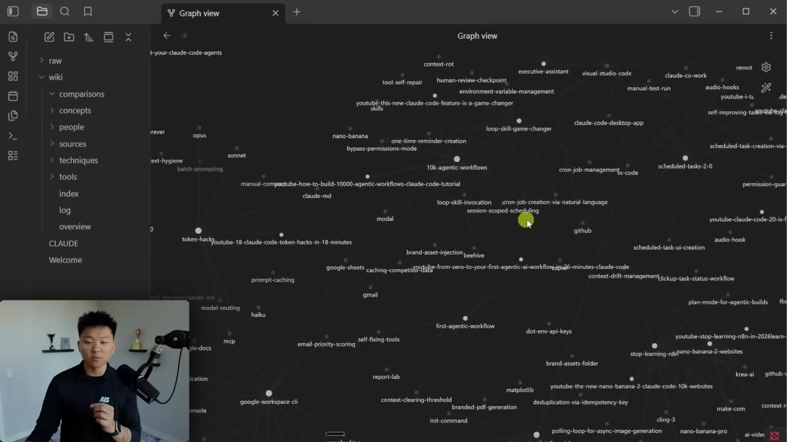
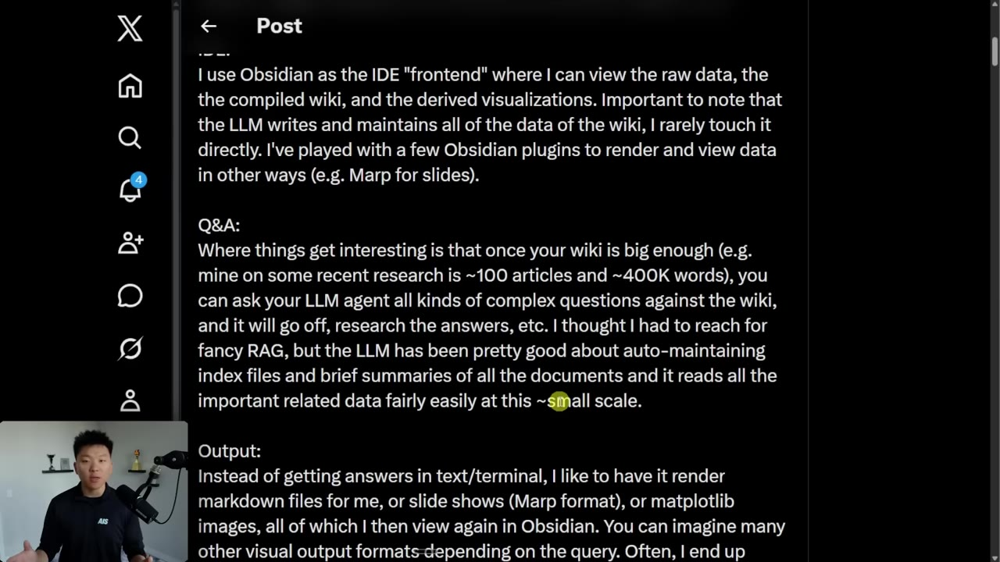
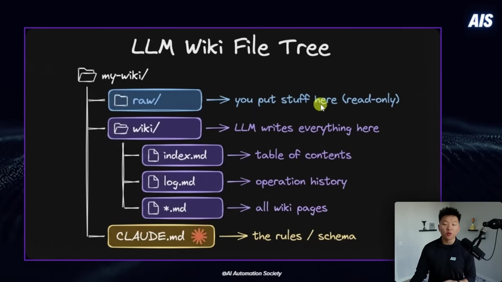
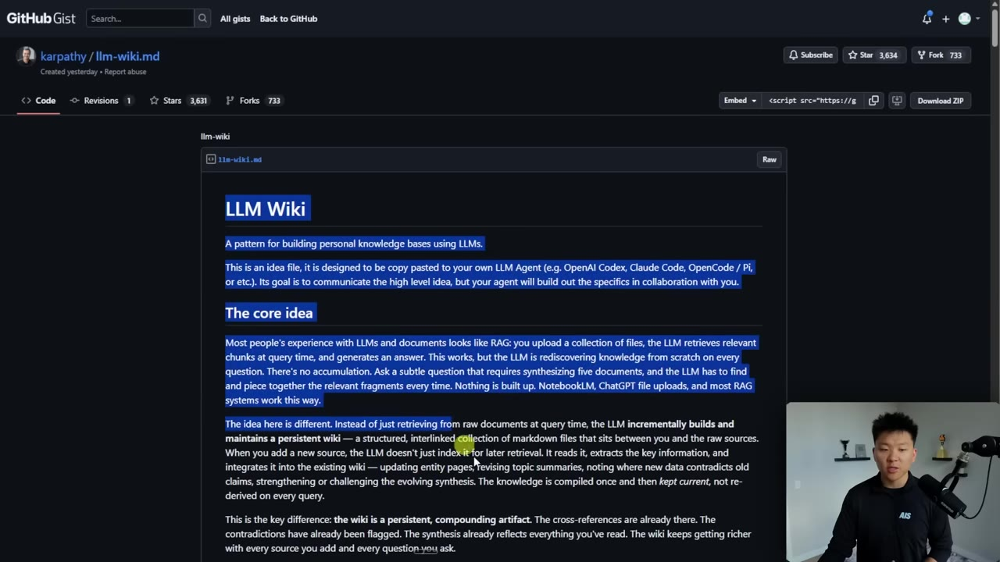
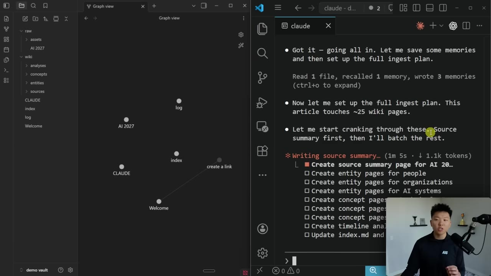
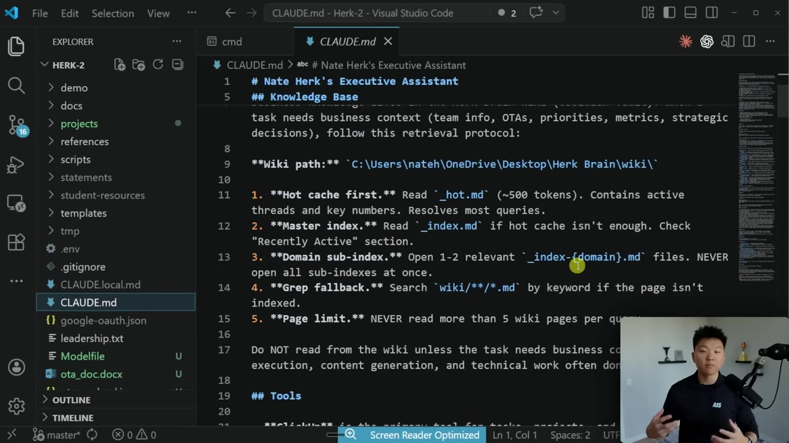
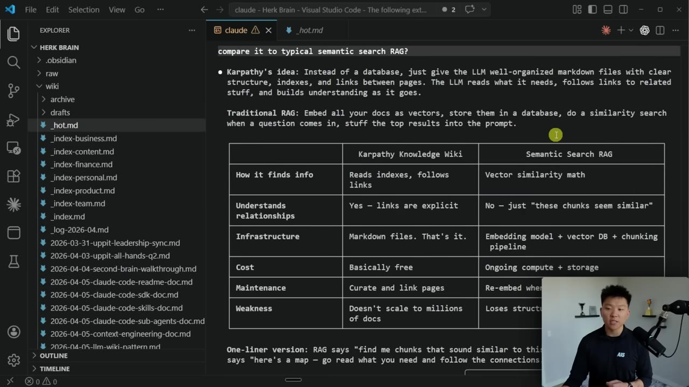

A folder of Markdown files, not a vector database. Walking through Andrej Karpathy's LLM wiki pattern — point Claude Code at your raw notes and it builds a linked, queryable second brain that compounds with every source you add.
Watch on YouTubeThirty-six recent YouTube videos, organized into a graph where every node is a tool, technique, or concept and every edge is a real relationship. The instruction was one line: grab the transcripts and organize everything. No manual linking — Claude Code inferred the connections itself.

The whole thing traces back to a post from Andrej Karpathy on building personal knowledge bases with LLMs. His own setup runs about 100 articles and ~400K words. The key admission: he expected to need heavy retrieval machinery and didn't.

I thought that I had to reach for fancy RAG, but the LLM has been pretty good about auto-maintaining index files and brief summaries of all documents, and it reads all the important related data fairly easily at this small scale.— Andrej Karpathy
The reason it matters: normal chats are ephemeral — the knowledge dies when the conversation ends. A persistent wiki makes knowledge compound like interest. No vector database, no embeddings, no chunking pipeline. Just a folder of Markdown.
Three moving parts. You drop sources into raw/ (read-only, you never edit it). Claude Code writes everything into wiki/ — the individual pages, an index.md table of contents, and a log.md operation history. CLAUDE.md tells the agent how the project works: how to search, how to update, what the schema is.

where you put stuff — treated as read-only source.
where the LLM writes every page it generates.
the table of contents the agent reads first.
an operation history, appended on every ingest.
the schema and search rules for the project.
There is no repo to clone. Karpathy followed up his post with the idea written out as a gist — llm-wiki.md — left deliberately vague so you can hack it to your own project. You copy the whole thing into Claude Code, add a one-line instruction to implement it as your second brain, and it scaffolds the vault.

To add a source, clip an article into raw/ (the Obsidian Web Clipper drops web pages straight in) and tell Claude Code to ingest it. It reads the article, asks what to emphasize and how granular to go, then chunks it its own way — one article isn't one page. Feeding it the AI 2027 essay produced about 23 linked pages: the source, six people, five organizations, an AI-systems page, concept pages, and an analysis.

The wiki is just a folder, so anything can read it. You can ask questions inside Obsidian, or point a separate project at the directory and let it crawl the index. The executive-assistant build does exactly that: its CLAUDE.md carries a wiki_path and a retrieval protocol — check the hot cache first, then the index, then sub-indexes, and only read full pages when the task actually needs them.

The hot cache (_hot.md) is a ~500-word scratchpad of the most recent context — useful for an assistant, skippable for the YouTube vault. Switching the assistant from static context files to this wiki method dropped its token usage.
No, but kind of. Claude Code built a side-by-side comparison. The wiki finds info by reading indexes and following explicit links, so relationships are real rather than "these chunks seem similar." Infrastructure is just Markdown; cost is basically free beyond tokens; maintenance is running a periodic lint to fix inconsistencies and fill gaps.

RAG says "find me chunks that sound similar to this." [The wiki] says "here's a map — go read what you need and follow the connections."— Nate Herk